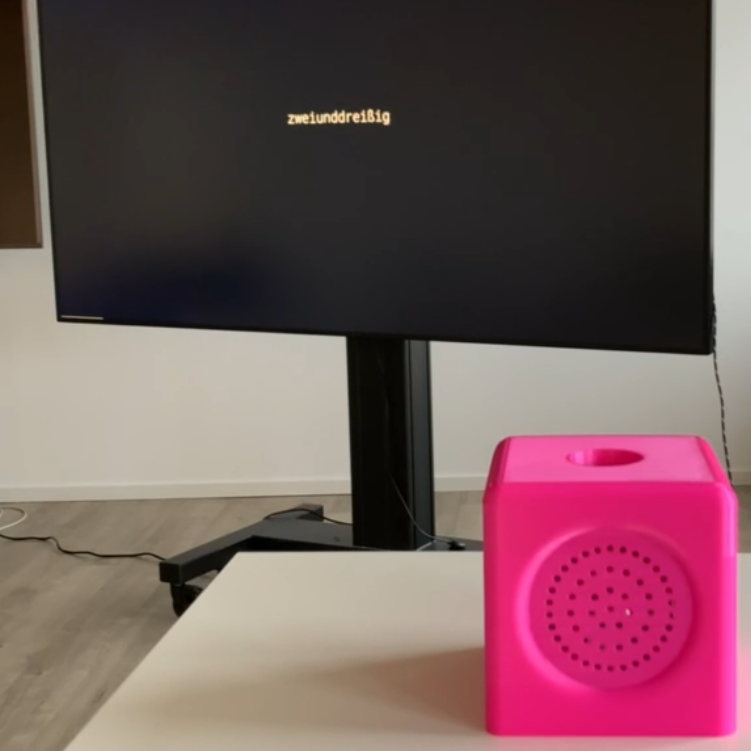
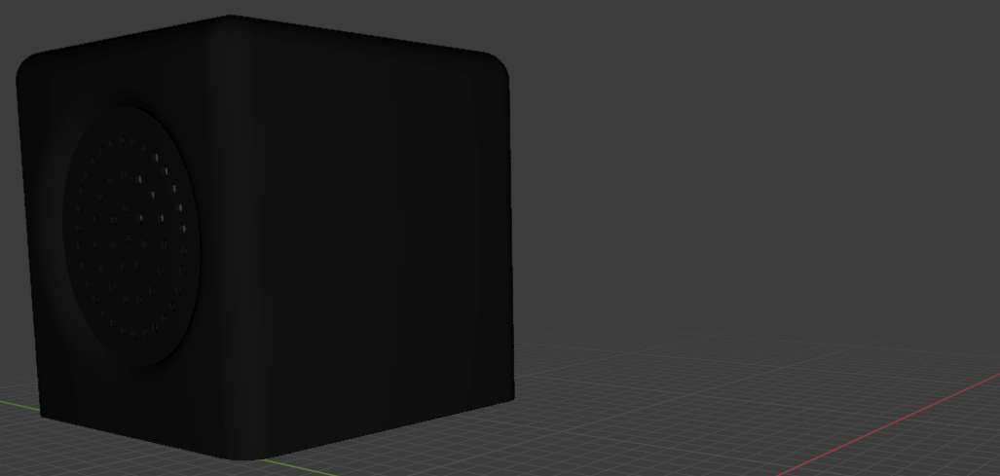

A short subtitle
In collaboration with some students from KISD (Cologne International School of Design), we had a design course during our fifth semester. My team created a prototype as a radio-mockup to keep track of the human death count worldwide. Complying to the task, Dunne & Raby, the famous design couple, inspired the work.
A showcase from the last demonstration can be found here.